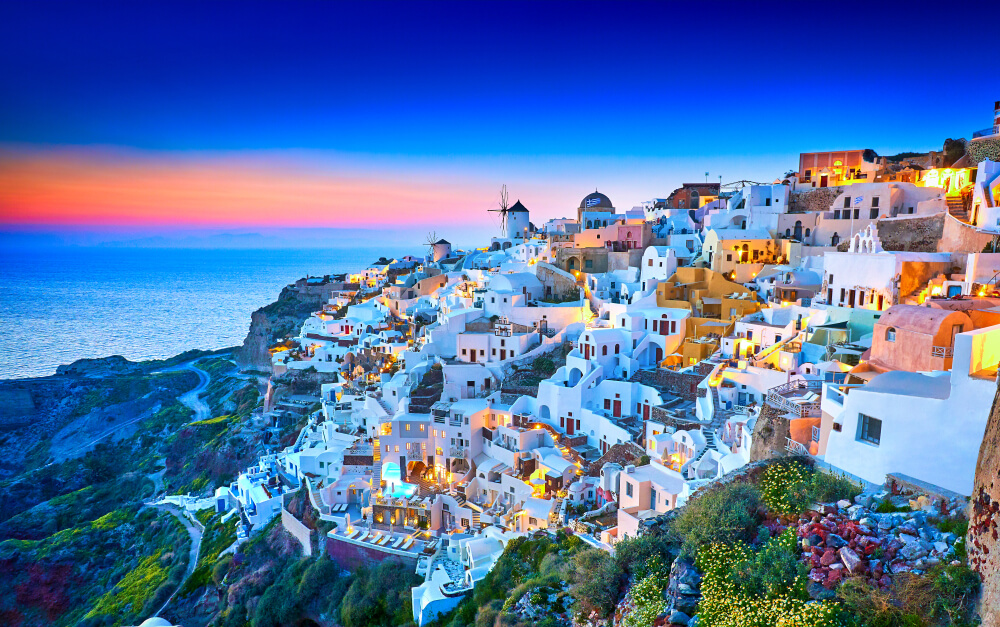

Можно ли жить без магии?
Как долго можно жить без магии? Если честно с собой, то можно обойтись без магии один день, два дня, неделю, месяц, и даже год. Но правда в том, что нельзя жить без магии долго. Ученые доказали, и мы неоднократно подтвердили через свой опыт, что нельзя жить без магии долго. Без магии человек начинает чувствовать себя грустно, депрессивно, и скучно.
Санторини, самый известный греческий остров
Санторини - самый известный греческий остров. Каждый год, миллионы туристов из Европы, Америки, России, Украины, Беларуси, и других стран приезжают на Санторини, чтобы насладиться его уникальной природой, красивыми пейзажами и богатой историей. Санторини - это остров, который поражает своей красотой и не оставляет равнодушным никого, кто его посетил.Санторини расположен в южной части Эгейского моря, примерно в 200 километрах на юго-восток от Афин, 150 километрах на юг от Миконоса, и 130 километрах на север от Крита. Остров имеет уникальную форму, которая напоминает полумесяц, и его высшая точка - гора Профитис-Илиас, которая достигает высоты 567 метров над уровнем моря.
Где находится Санторини?
Санторини находится в южной части Эгейского моря, примерно в 200 километрах на юго-восток от Афин, 150 километрах на юг от Миконоса, и 130 километрах на север от Крита.
Вулкан Санторини
Геологически, Санторини принадлежит к Эгейской Вулканической Дуге. Магма Санторини приходит из субдукции Африканской Плиты под Эгейскую Плиту. Магма поднимается к поверхности, потому что она легче, чем окружающая мантия.
Климат и погода на Санторини
Санторини имеет Средиземноморский климат с жаркими, сухими летами и мягкими, влажными зимами. Средняя температура воздуха в течение года составляет около 18°C, а среднегодовое количество осадков составляет около 400 мм.
Лето на Санторини длится с июня по сентябрь, а зима с декабря по март. Весна и осень являются переходными сезонами.